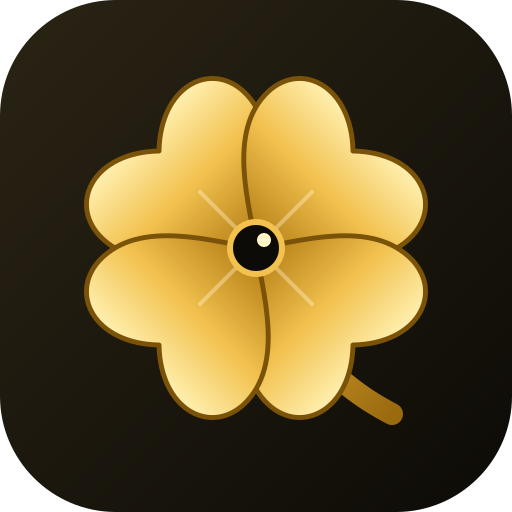

CloverEye keeps what you have chosen so far and uses the defaults for the rest: worksafe boards only, no favourites, threads updated every 10 s. Settings → Run setup again brings this back.
These boards carry adult content. They stay hidden unless you turn this on, and you can turn it off again in Settings at any time.